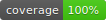

Problem
Libraries like Knex.js needs connection configuration in form of separates fields: host, user, password, etc. Azure App Service sets connection configuration as connection string.Solution
Prepare a npm package for JavaScript and TypeScript to parse connection string. Check the quality with the tools available on github platform:- Test with Travis CI

- Code coverage with
- Automated code review with

Travis CI
- Sign in to Travis CI and flick your repo’s switch on
- Add a .travis.yml file to the repository
language: node_js node_js: - stable - Add the badge to the README file

[1/2]
- Sign in to Coveralls and add your repository
- Add to the .travis.yml file
after_success: - npm run coveralls - Add new devDependencies
npm install --save-dev coveralls mocha-lcov-reporter
[2/2]
- Add to the package.json file
"coverage": "istanbul cover _mocha", "coveralls": "npm run coverage -- --report lcovonly \ && cat ./coverage/lcov.info | coveralls" - Add the badge to the README file 